Détail de l'AP
Voici l'organisations du projet :
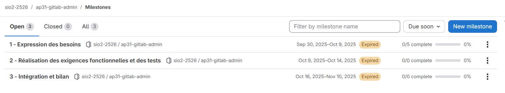Les tâches du premier milestone :

Les tâches du deuxième milestone :

Étant en groupe, nous nous sommes séparés les tâches. Ma partie était sur la création de la page utilisateur du site web. Voici les tickets que j'ai effectués sur le projet :
-

-

- 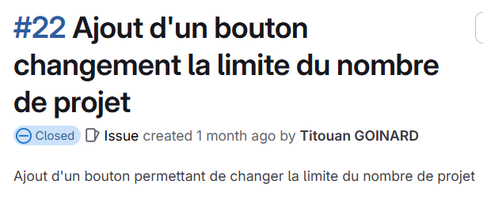
La mise en place de l'API gitlab
Le serveur est mis sur VSphere. Il a fallu configurer le serveur US22 en y mettant nos adresses IP, la passerelle et la route.
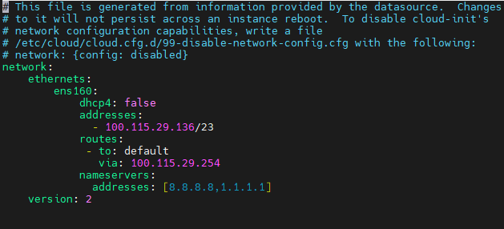Après la vérification de la communication avec internet, nous avons téléchargé GitLab sur la machine virtuelle. Une fois ces étapes faites, nous avons la possibilité d'ouvrir la page GitLab de la VM en écrivant notre IP.

Code des fonctions
Voici la page index du projet :
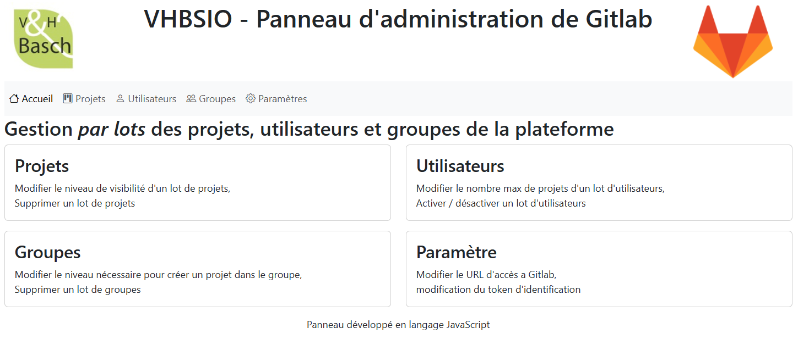Voici le code des fonctions utilisées permettant de charger les utilisateurs sur GitLab ainsi que le rendu :
-
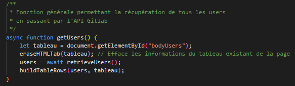
Fonction permettant d'afficher les utilisateurs présents dans l'API Rest de GitLab
Fait appel à plusieurs fonctions tel que :
EraseHTMLTab
CreateTableRow -
Fonction permettant de supprimer les utilisateurs d'affichage de la page web.
Parcours le tableau des utilisateurs pour supprimer chaques lignes
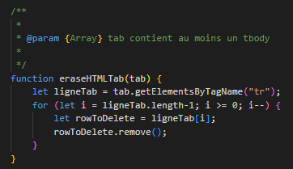 -
Fonction permettant la création du tableau avec les informations présentent dans l'API Rest
Pour un utilisateur donnée, il va créer le code html de l'utilisateur.

Informations sur les fonctions d'activation et de désactivation des utilisateurs
Ces fonctions font appel à l'API Rest de GitLab pour changer l'état d'un utilisateur.
La fonction activerDesactiverUser permet de savoir si l'utilisateur est
activé ou désactivé.
La fonction changerEtatUser permet de changer l'état de l'utilisateur en
fonction de son état actuel.
A la fin de la fonction, la fonction getUsers est appelée pour rafraîchir les informations
des utilisateurs, donc celles qui ont été modifiées.
- 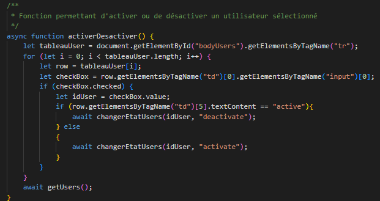
-

Tests et preuves du fonctionnement des fonctions :
- 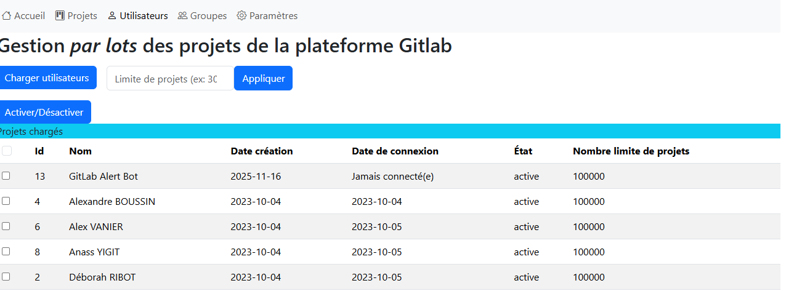 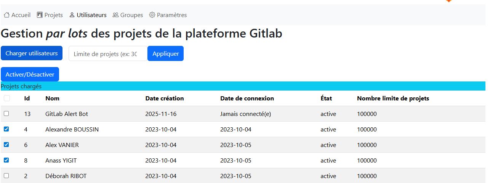
- 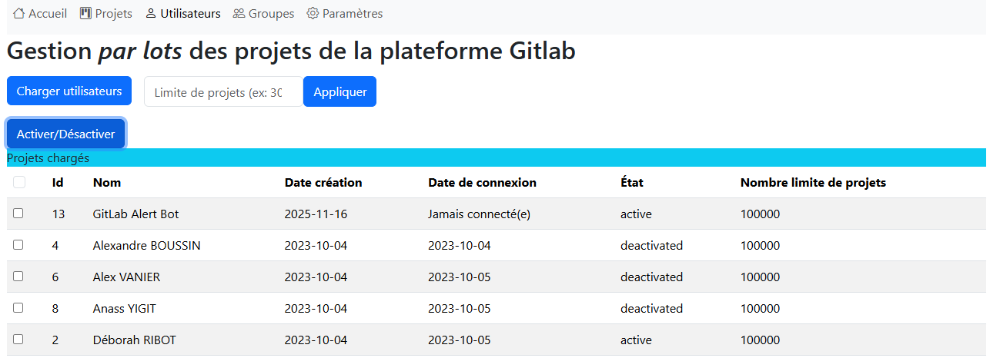
-

Information sur les fonctions du changement du nombre de projets limite pour un utilisateur.
Ces fonctions font appel à l'API Rest de GitLab pour changer le nombre de projets limité d'un utilisateur.
La fonction changerLimite permet de récupérer la valeur entrée par
l'utilisateur dans le champ de texte.
La fonction changerNombreLimite permet de mettre à jour la limite de projets pour un
utilisateur donné.
A la fin de la fonction, la fonction getUsers est appelée pour rafraîchir les informations
utilisateurs donc celles qui ont été modifiées.

- 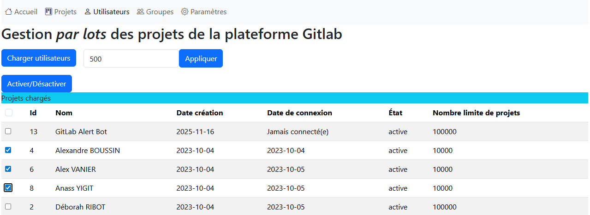

- 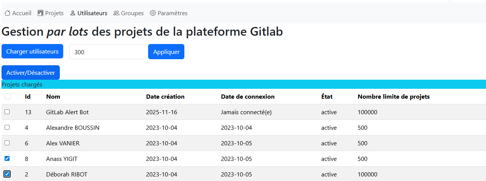